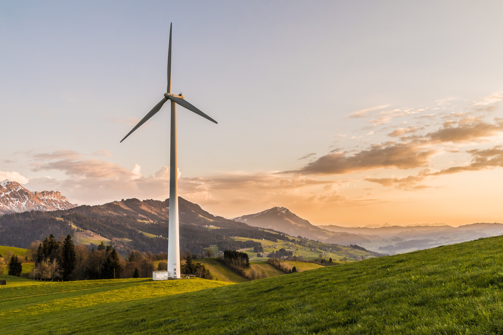

Eco-Friendly Energy Sources
Solar Cells

Solar cells, also known as photovoltaic cells, convert sunlight directly into electricity. They are a clean and renewable energy source that can be used to power homes and businesses. Solar cells are typically made from silicon and are installed on rooftops or in large solar farms to harness the power of the sun.
Wind Turbine
Wind turbines generate electricity from the kinetic energy of the wind. As the wind blows, it turns the turbine's blades, which spin a generator to produce electricity. Wind power is a sustainable and abundant source of energy, with wind farms being set up in various locations to take advantage of strong and consistent winds.
Water Energy

Water energy, also known as hydroelectric power, harnesses the energy of flowing or falling water to generate electricity. Dams are built to control the flow of water, and as it passes through turbines, the mechanical energy is converted into electrical energy. Hydroelectric power is a renewable energy source that contributes to reducing greenhouse gas emissions.